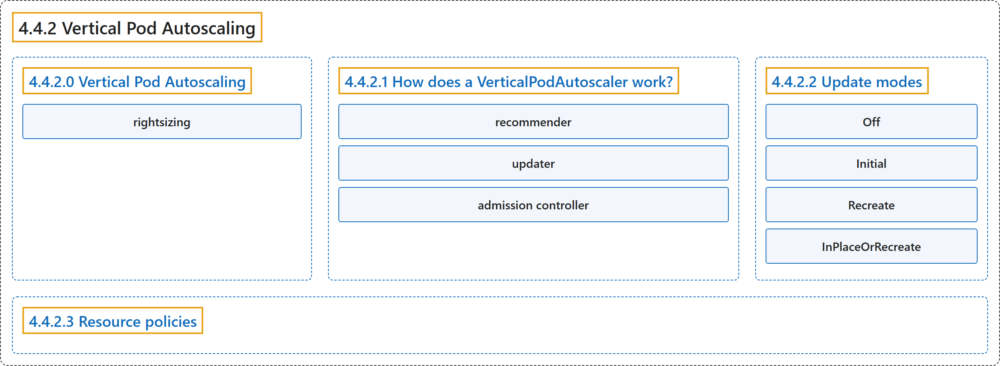

4.4.2 Vertical Pod Autoscaling
Classification

Glossary
| Term | Definition | 中文翻译 | Source |
|---|---|---|---|
| 4.4.2 Vertical Pod Autoscaling Pod 垂直自动扩缩 |
"In Kubernetes, a VerticalPodAutoscaler automatically updates a workload management resource" | 在 Kubernetes 中，VerticalPodAutoscaler 自动更新一个工作负载管理资源 | The Kubernetes Authors, n.d., "Vertical Pod Autoscaling", para. 1 |
| 4.4.2.0 Vertical Pod Autoscaling Pod 垂直自动扩缩 |
(No definition) | （无定义） | The Kubernetes Authors, n.d., "Vertical Pod Autoscaling" |
| rightsizing 合理调整规格 |
(context) "This is also known as rightsizing, or sometimes autopilot." | （语境）这也称为合理调整规格，有时称为自动驾驶。 | The Kubernetes Authors, n.d., "Vertical Pod Autoscaling", para. 2 |
| 4.4.2.1 How does a VerticalPodAutoscaler work? VerticalPodAutoscaler 如何工作 |
(No definition) | （无定义） | The Kubernetes Authors, n.d., "How does a VerticalPodAutoscaler work?" |
| recommender 推荐器 |
"The recommender, which analyzes resource usage and provides recommendations." | 推荐器，分析资源用量并给出建议。 | The Kubernetes Authors, n.d., "How does a VerticalPodAutoscaler work?", para. 3 |
| updater 更新器 |
"The updater component monitors the VerticalPodAutoscaler resources and compares current Pod resource requests with the recommendations." | 更新器组件监视 VerticalPodAutoscaler 资源，并把当前 Pod 的资源请求与建议进行比较。 | The Kubernetes Authors, n.d., "How does a VerticalPodAutoscaler work?", para. 16 |
| admission controller 准入控制器 |
"The admission controller operates as a mutating webhook that intercepts Pod creation requests." | 准入控制器 作为一个变更型 Webhook 运行，拦截 Pod 创建请求。 | The Kubernetes Authors, n.d., "How does a VerticalPodAutoscaler work?", para. 20 |
| 4.4.2.2 Update modes 更新模式 |
"A VerticalPodAutoscaler supports different update modes that control how and when resource recommendations are applied to your Pods." | VerticalPodAutoscaler 支持不同的更新模式，控制以何种方式、在何时把资源建议应用到 Pod。 | The Kubernetes Authors, n.d., "Update modes", para. 1 |
| Off Off |
"In the Off update mode, the VPA recommender still analyzes resource usage and generates recommendations, but these recommendations are not automatically applied to Pods." | 在 Off 更新模式下，VPA 推荐器仍会分析资源用量并生成建议，但这些建议并不会被自动应用到 Pod。 | The Kubernetes Authors, n.d., "Off", para. 1 |
| Initial Initial |
"In Initial mode, VPA only sets resource requests when Pods are first created." | 在 Initial 模式下，VPA 只设置资源请求，时机是 Pod 首次创建时。 | The Kubernetes Authors, n.d., "Initial", para. 1 |
| Recreate Recreate |
"In Recreate mode, VPA actively manages Pod resources by evicting Pods when their current resource requests differ significantly from recommendations." | 在 Recreate 模式下，VPA 主动管理 Pod 资源，方式是驱逐 Pod，当其当前资源请求与建议差异显著时。 | The Kubernetes Authors, n.d., "Recreate", para. 1 |
| InPlaceOrRecreate InPlaceOrRecreate |
"In InPlaceOrRecreate mode, VPA attempts to update Pod resource requests and limits without restarting the Pod when possible." |
在 InPlaceOrRecreate 模式下，VPA 会尽量更新 Pod 的资源请求和限制，而不重启 Pod。 |
The Kubernetes Authors, n.d., "InPlaceOrRecreate", para. 1 |
| 4.4.2.3 Resource policies 资源策略 |
"Resource policies allow you to fine-tune how the VerticalPodAutoscaler generates recommendations and applies updates." | 资源策略让你微调 VerticalPodAutoscaler 生成建议和应用更新的方式。 | The Kubernetes Authors, n.d., "Resource policies", para. 1 |
References
The Kubernetes Authors. (n.d.). Vertical Pod Autoscaling. Kubernetes Documentation. Retrieved October 31, 2026, from https://kubernetes.io/docs/concepts/workloads/autoscaling/vertical-pod-autoscale/